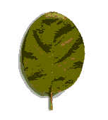
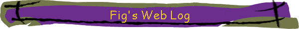

Welcome to my Homepage!
Hello, my name is Fig and this is my website. Welcome!
On here you can keep up to date with my latest projects, see pictures of my cat, and maybe find some fun things you can download!

Once you're done here, maybe consider checking out one of these other cool sites:
| HackADay - A web log of cool and interesting hacks as well as news from the tech world. | |
| National Library of Scotland Maps - Amazing archive over hundreds of thousands of old maps of the UK (as well as some other places). |
Copyright Fig 2026